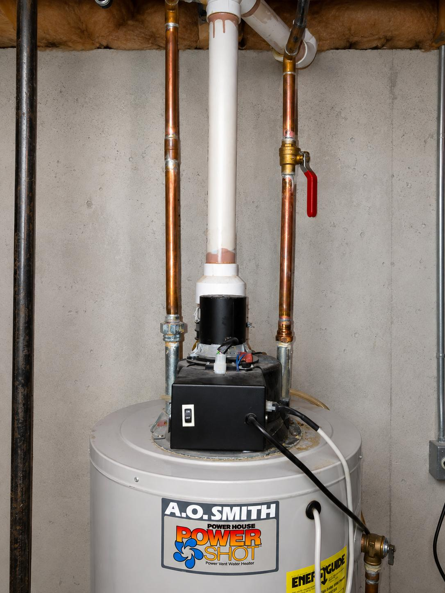
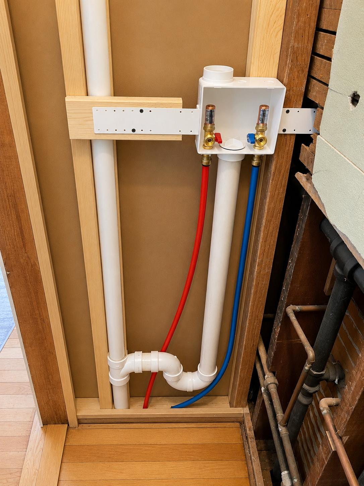
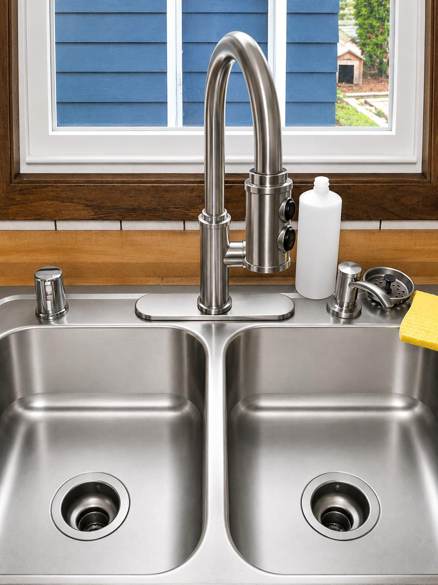

For your home
Drain cleaning, fixtures, water heaters, sump pumps and pipe repairs.
Three generations of Milwaukee plumbers. Repairs, drains and water heaters for your home. New construction and ADA renovations for the places our community shares.

Everyday service for Milwaukee County homes. Plumbing design, construction and remodeling for commercial, multi-family and municipal properties.
Explore all plumbing services ↗Drain cleaning, fixtures, water heaters, sump pumps and pipe repairs.
New construction rough-in and finish, ADA renovations and statewide municipal work.
Drain cleaning & clog removal. Hose bibs & outdoor spigots. Installation & repair for toilets, sinks, garbage disposals, faucets & fixtures, showers & bathtubs, and valves.
“Showing up every day for 50 years and 3 generations.”
Meet the A&A story ↗journeyman plumbers trained
5master plumbers trained, plus several plumbing inspectors.
Ask about a career at A&A ↗

Community connections: A&A’s own story includes work with Habitat for Humanity, Northcott Neighborhood House and public institutions on ADA remodels.
“Friendly guys, came in did the job in practically no time. I haven't had any issues since! Would 100% recommend!”
— BLAKE A. · Testimonial published on A&A’s own website
Service and repairs in Milwaukee County.
Statewide municipal projects in Wisconsin.
A first look at your new site.
Built around the business you’ve built.